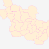
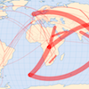
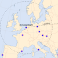
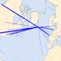
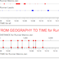
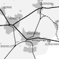
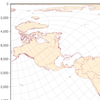
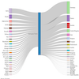
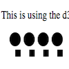
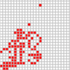

| 
Standard D3 Maps (using lon-lat geographic coordinates):
The standard way the D3 geo methods work is with data in lon-lat geographic coordinates, being
projected by
d3.geo
functions. Versatile and powerful, especially if using topojson data.
|
 Maps using projected meter coordinates:
Map a geojson with cartesian coordinates, instead of lat-lon's (in this case the Dutch RD) --
Uses an override of standard D3 geo projection behaviour:
don't perform a full projection and resampling, but only a 1st order (affine) translation and
scaling to transform real-world XY-coordinates into SVG screen coordinates...
Maps using projected meter coordinates:
Map a geojson with cartesian coordinates, instead of lat-lon's (in this case the Dutch RD) --
Uses an override of standard D3 geo projection behaviour:
don't perform a full projection and resampling, but only a 1st order (affine) translation and
scaling to transform real-world XY-coordinates into SVG screen coordinates...
Includes auto-scaling (responsive) example.
|
| 
Land Grabbing [Dutch]:
Experimenting with different ways to visualise trans-national land-grabbing (for the Dutch magazine
Geografie):
as a map, as a flow diagram, a force-directed graph and as an OD-matrix...
|

Distance Perception:
Distances in Europe, as perceived by 1st year Geography students --
Students overestimate distances to eastern-European cities compared to Southern-European ones...
|
| 
Connectivity of Kevlavik airport:
Interactive visualisation of the flights out of Kevlavik airport (in Iceland).
Filter by brushing of the years and departure times...
|

Tool to explore tracks withs stops:
Shows stops and distance travelled in different ways -- as map, as time and
distance equally scaled, as time scaled dependent of distance and as distance scaled dependent of
time.
|
| 
History of railroads in Twente:
This web-map shows the history of the railroads in Twente (a region in of Overijssel province, in
the Netherlands).
Moving the time-slider will show the changes through the years.
|

Measuring Distance & Azimuth:
Explains how a Plate-Carré projection can serve as a nifty tool
to show bearing and distance from a location on Earth., where you would normally use a equidistant
projection....
|
| 
Refugees flow diagram:
An example of using a non-geographic flow chart (Sankey Diagram) of refugees flow to the EU in 2103...
|

D3 and Javascript data filter test:
Explains difference between JavaScript standard Array.filter() and d3.filter() function...
|
| 
Langton's Ant:
This is an implementation of Langton's Ant using HTML5 Canvas --
Langton's ant is a two-dimensional
Turing machine with a very simple set of rules but complicated emergent behaviour...
|